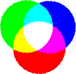

Глава 4
В этой главе мы поговорим о том, как с помощью CSS присвоить цвет элементу и его фону, а так же о том, как использовать рисунок в качестве фона элемента и управлять его положением.
Перед тем как перейти непосредственно к обучению, проведу краткий экскурс на тему: "Цвета в Интернете"
Цвет в CSS может быть задан тремя методами:
С именным значением цвета всё понятно black - черный, green - зелёный, olive - оливковый и т.д. (полную палитру базовых красок, т.е. цветов для которых зарезервированы именные значения, смотрите здесь: http://webremeslo.ru/spravka/spravka1.html)
Однако по понятным причинам не для всех оттенков цветов зарезервировано индивидуальное имя. Когда возникает необходимость в использовании какого либо "нестандартного" цвета необходимо определить его значение RGB, (Red, Green , Blue ) сочетание красного, зеленого и синего цвета в числовом выражении. Каждый оттенок из основных цветов в системе RGB может выражаться в числе от 0 до 255.
Например, черный цвет будет иметь значение 0,0,0 то есть отсутствие всякого цвета.. белый - значение 255,255,255 теоретически если смешать основные цвета должен получится белый, а вот например классический синий цвет имеет значение 0,0,255 то есть на "мольберте" присутствует только синий. На рисунке наглядно показано, что происходит с красками если их смешать, так смешивая оттенки основных цветов можно добиться любого цвета из видимого спектра.
Однако в большинстве случаев "веб краски" имеют шестнадцатеричное выражение десятичного значения RGB.
В шестнадцатеричном исчислении цифры от 10 до 15 заменены латинскими буквами и числовой ряд приобретает следующий вид:
0, 1, 2, 3, 4, 5, 6, 7, 8, 9, A, B, C, D, E, F.Числа больше 15ти в шестнадцатеричной системе образуются путём объединения двух и более чисел в одно. Так например, числу 255 в десятичной системе соответствует число FF в шестнадцатеричной системе.
Значит, для того чтобы выразить нужный оттенок в шестнадцатеричном виде, нам понадобиться три пары чисел, где первая пара - значение красного цвета, вторая пара значение зелёного и третья пара синего цвета. Так, например, тот же классический синий в шестнадцатеричном выражении будет выглядеть так: #0000FF. Знак решётки перед числом ставится для указания того что данное число является шестнадцатеричным, например в числе #808000 нет латинских букв однако со знаком решётки понятно что оно шестнадцатеричное и выражает собой оливковый цвет.
И еще.. выражая цвет в шестнадцатеричном виде можно обойтись тремя числами, которые затем будут дублироваться, например запись #DAF будет сокращённой формой #DDAAFF.
Фух.. затянул я с водной частью давайте же наконец учить CSS..
Для того, что бы перекрасить текст, какого либо, элемента в нужный нам цвет необходимо воспользоваться свойством color и присвоив ему нужное значение - собственно цвет.
Как уже сказано выше цвет в CSS может быть задан следующими методами:
Пример:
А вот свойство background-color - определяет цвет фона элемента.
Цвет фона может иметь следующие значения:
Пример:
Для любого элемента можно присвоить фоновое изображение с помощью CSS свойства: background-image.
Возможные значения background-image:
Для того чтобы сделать некую картинку фоном для элемента необходимо указать к ней путь согласно следующего синтаксиса url(путь к файлу/имя файла). Путь к файлу указывается в том случае, если рисунок находится в другой папке.
В примере ниже в качестве основного фона (элемент body) используется одно графическое изображение, а для блока div другое, возможность использования различных фоновых изображений для разных элементов страницы позволяет решать практически любые дизайнерские задумки.
Пример:
Если рисунок не заполняет собой весь фон элемента, то он выкладывается "плиткой".
Если на странице или в каком либо блоке присутствует полоса прокрутки, то фоновое изображение будет прокручиваться вместе с остальным содержанием данного блока.
Зафиксировать фоновое изображение позволяет свойство background-attachment, которое может принимать одно из двух значений:
Пример:
Как уже говорилось выше, если рисунок не заполняет собой весь фон элемента, то он повторяется и выкладывается "плиткой". Свойство background-repeat - регулирует повторение фонового изображения.
Возможные значения:
Пример:
При помощи CSS свойства background-position - можно управлять позицией фонового изображения в элементах где оно задано с помощью background-image.
Позицию фонового изображения, а точнее его верхнего левого угла, можно задать в процентах, пикселях, а также любых других единицах измерения CSS, с помощью двух значений, где первое значение будет являться отступом от левой границы элемента, а второе значение отступом от верхней границы элемента.
Например, запись: background-position: 200px 100px; будет обозначать, что фоновое изображение будет смещено по горизонтали на 200 пикселей от левой границы элемента и по вертикали на 100 пикселей от верхней границы элемента.
Так же можно использовать следующие значения:
по горизонтали:Пример:
Ну и в довершении главы немного о базовом свойстве background.
Являясь базовым свойством, background может одновременно принимать те или иные значения от его дочерних свойств:
Все эти свойства мы рассмотрели выше, так что вдаваться в подробности нет смысла..
Нужные значения дочерних свойств указываются через пробел, в любом порядке и по мере необходимости.
Пример:
При использовании изображения в качестве фона с помощью свойства background-image заодно заливайте фон альтернативным цветом с помощью background-color. Так если, по каким либо причинам, не загрузится фоновое изображение или же пользователь умышленно отключит в настройках браузера загрузку рисунков, фон элемента не останется "голым".
Не используйте большие весом "мегабайтные" изображения берегите время деньги и нервы пользователей.. А если уж без этого не обойтись, то перед тем как выкладывать такие изображения, как следует, поработайте с ней в графических редакторах на предмет "лишнего веса". Почти всегда можно значительно сжать картинку особо не проиграв в качестве изображения.